The DLR mesh study, explained
- I ran the same wind simulation three times. The only thing that changes is the cell size inside one box around the weather-station building: 4 m, then 2 m, then 1 m.
- 19 virtual sensors on 4 vertical lines show whether the answer stops changing when the cells get smaller.
- If the change from medium to fine is below about 2 to 5 %, the mesh no longer drives the answer. That is verification. Checking the model against the real wind (validation) comes later, with the sensor data.
1The goal, and Arthur's requests
The goal: show that our simulated wind around one group of DLR buildings no longer depends on the size of the mesh cells, down to drone scale (1 m), so we can trust it as a flight cost map.
Some context. The project is a digital twin for drones at the DLR Oberpfaffenhofen campus. A digital twin is a computer copy of a real place. We simulate the wind there with OpenFOAM, a free program for CFD (Computational Fluid Dynamics: computing how air or water moves). Later, the wind field becomes a flight cost map: a 3D map that tells a drone path planner where flying is hard (strong headwind, gusts) and where it is easy.
Arthur, our supervisor, asked for a mesh refinement study. In his words:
Plus a table with: (1) mesh quality: skewness, non-orthogonality, aspect ratio, invalid cells; (2) convergence: residuals and continuity error; (3) mesh independence: velocity at fixed monitoring points and pressure drop, at points upstream of the campus, between buildings, behind a building (wake), and above the campus at a fixed height.
| Arthur asked for | What I did | Where on this page |
|---|---|---|
| Cells at drone scale (1 × 1 m max) | The fine mesh has 1 m cells inside the box. | 3 |
| A couple of buildings; airflow still visible; don't crash the PC | One box of 185 × 117 × 48 m around the weather-station building, its tall neighbour, the gap between them and the wake. Outside the box the mesh is unchanged. Fine mesh: about 2 million cells (my estimate), instead of about 45 million for 1 m everywhere on campus. | 2, 3 |
| Differences in the vertical axis | Every probe location is a vertical line, from 2 m up to 40 m above the ground. One plot shows wind speed against height for each mesh. | 4, 8 |
| Table 1: mesh quality | Read from checkMesh for each mesh. | 6 |
| Table 2: convergence | Read from the simpleFoam log, plus a "probe drift" check. | 6 |
| Table 3: mesh independence | Wind speed at 7 key probes for each mesh, the change in %, an error band (GCI), and the pressure drop from upstream to the wake. | 6 |
2What a mesh is, and why cell size matters
A computer cannot compute the wind at every one of the infinitely many points in the air. So we cut the air into many small boxes, called cells. All the cells together are the mesh (or grid). The solver then computes one value per cell: one wind speed and direction, one pressure, one turbulence level. That value is an average over the whole cell.
Consequence: anything smaller than a cell is blurred out. Look at the picture. It uses a made-up flow behind a 12 m building (not our simulation), so you can see the effect clearly.
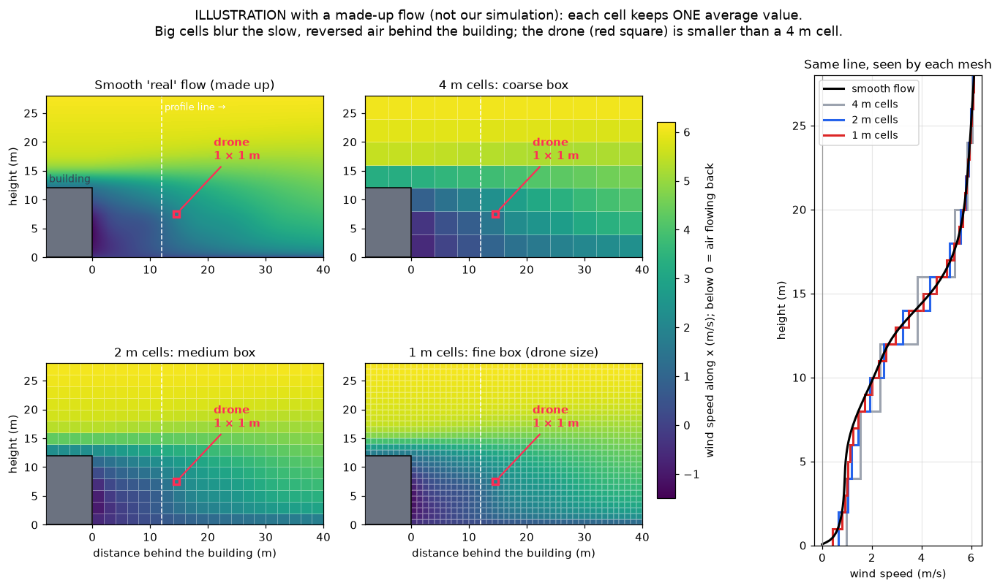
Why not simply use 1 m cells everywhere?
Because the number of cells explodes. When you halve the cell size, each cube splits into 2 × 2 × 2 = 8 smaller cubes.
Going from 4 m to 1 m multiplies the cells by 8 × 8 = 64. Our campus box (the zone already at 4 m: about 740 m × 730 m, up to 106 m high) holds about 44 million cubic metres of air. At 1 m that is roughly 45 million cells. Today's whole coarse mesh has 1.19 million.
A common rule of thumb for this kind of solver is about 1 GB of memory per million cells. So 45 million cells would need tens of GB. The laptop has 16 GB. It would also take days instead of hours.
How I got the estimates: the air volume comes from the building and ground heights in site_map.npz. They are rough (the map has small holes). The real cell counts of medium and fine will be in Table 1 tomorrow.
3The three meshes and the box
Refinement levels
The mesh starts as a background grid of 16 m cubes. The meshing tool (snappyHexMesh, see section 5) counts refinement in levels. Each level halves the cell size. Drawn to scale:
| Level | Cell size | Where it is used |
|---|---|---|
| 0 | 16 m | Background grid, far from the campus |
| 1 | 8 m | Transition zone |
| 2 | 4 m | The whole campus box, and the ground. Our box in the coarse mesh. |
| 3 | 2 m | Next to every building wall (all meshes). Our box in the medium mesh. |
| 4 | 1 m | Our box in the fine mesh. |
The three meshes
| coarse | medium | fine | |
|---|---|---|---|
| Cell size inside the box | 4 m | 2 m | 1 m |
| Level inside the box | 2 | 3 | 4 |
| Total cells | 1,190,168 (measured) | ≈ 1.3 million (estimate) | ≈ 2.1 million (estimate) |
| Everything else: domain, inflow, physics, solver settings, 1000 iterations, the 19 probes | identical in all three | ||
A detail that matters. In all three meshes, cells touching a building wall are already 2 m (level 3), and the ground is 4 m (level 2). So in the coarse mesh the box asks for 4 m, which is already there: it adds nothing. The coarse case is therefore exactly the original simulation from 10 November. In the medium mesh, all the air in the box becomes 2 m, including next to the ground. In the fine mesh, everything in the box is 1 m. Around the box, snappyHexMesh keeps at least 3 cells of each size, so the size changes gradually (no sudden jump from 1 m to 4 m).
Two more reasons for the choices:
- Why three meshes? With two meshes you only see one change; you can't tell if it is still shrinking. With three, you see whether the change shrinks from coarse→medium to medium→fine. Three is also the minimum for the standard error band, the GCI (section 6).
- Why halve each time? A constant refinement ratio (here r = 2) makes the three meshes comparable, and the GCI formula needs it. It also matches how snappyHexMesh works (one level = half the size).
Where the box is, and why there
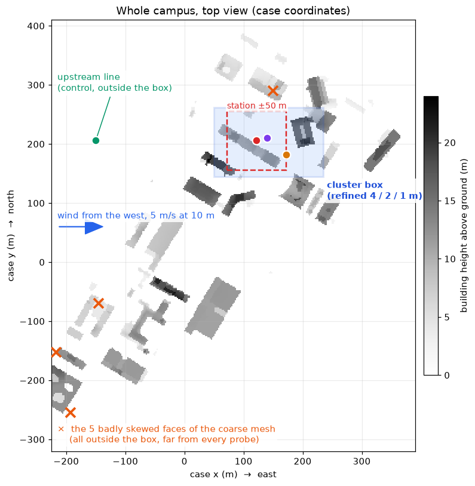
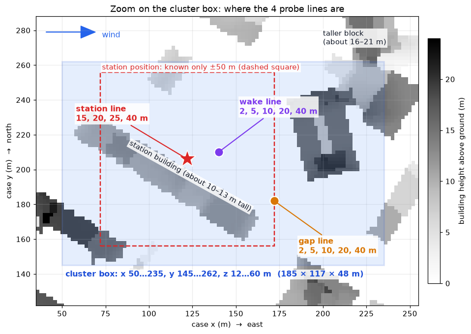
Box size, in case coordinates: x 50 → 235 m, y 145 → 262 m, z 12 → 60 m, so 185 × 117 × 48 m. The ground inside the box is at z ≈ 13.5 to 19 m, so the box reaches about 41 to 46 m above the ground. The tallest building in it is about 21 m.
Why this place: the DLR campus has a weather station with a wind sensor. If the refined box sits on that station, the same mesh can later be compared with real measurements. The station position is only known to about ±50 m, so the box covers that whole square (dashed). Inside the box there are also all the flow types Arthur listed: a gap between buildings, a wake, and air above the roofs.
- Station on the DLR web plots: 48.087 N, 11.280 E (three decimals, hence about ±50 m).
- In UTM zone 32 (a flat map grid in metres): E 669787, N 5328485.
- The scene's terrain file has its origin at E 670000, N 5328000. So in scene coordinates: x = −213 m, y = +485 m.
make_case.pymoves the scene so that the terrain centre is at (0, 0), because huge UTM numbers hurt OpenFOAM's precision. The shift is (−335, 279) m, subtracted: case = scene + (335, −279).- So the station is at case x = −213 + 335 = 122, y = 485 − 279 = 206. Here x points east and y points north.
The side view shows the same box from the side, along the wind:
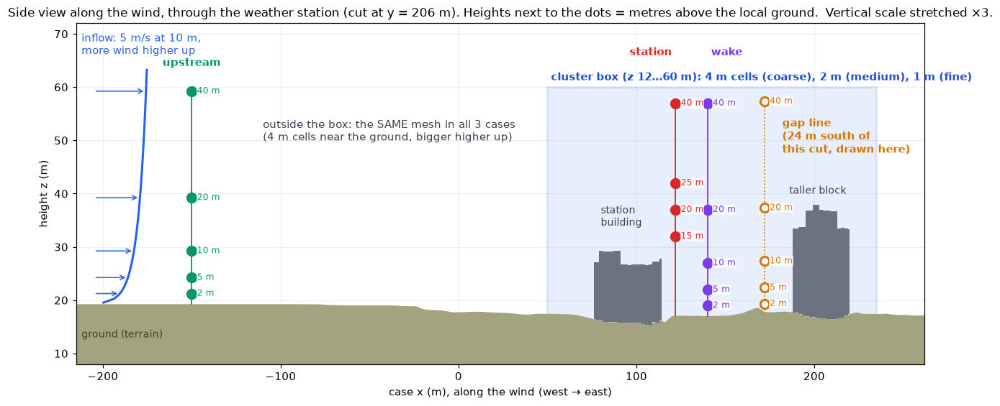
4The probes: 19 virtual anemometers
An anemometer is a wind sensor. A probe is a virtual one: a fixed point where OpenFOAM writes down the wind velocity (U), the pressure (p) and the turbulence (k) after every iteration. We compare the probes between the three meshes. Each location is a vertical line of points, so we also see how the wind changes with height.
| Line | Position (case x, y) | Heights above ground | What kind of air | Why here |
|---|---|---|---|---|
| upstream | (−150, 206): open field, 200 m west of the box | 2, 5, 10, 20, 40 m | The incoming wind, not yet disturbed | Control. The mesh here is the same in all three runs, so the values should not change. If they do, something else changed. Also Arthur's "upstream of the campus". |
| gap | (172, 182): between the end of the station building and the taller block | 2, 5, 10, 20, 40 m | Squeezed between buildings, so faster | Arthur's "between buildings". How fast the air goes through depends on how many cells fit across the gap. |
| wake | (140, 210): about 18 m downwind (east) of the station | 2, 5, 10, 20, 40 m | Sheltered, slow, possibly turning back | Arthur's "behind a building". The most mesh-sensitive place: big cells blur it the most. |
| station | (122, 206): the weather-station position | 15, 20, 25, 40 m | Above the roofs (roof ≈ 10 to 13 m) | Arthur's "above the campus at a fixed height", and the place we will later compare with the real sensor. |
That is 5 + 5 + 5 + 4 = 19 probes. Their exact coordinates are in DLR/meshStudy/probes_index.csv. All 19 were found inside the coarse mesh (the solver lists them in its output).
5The pipeline, step by step
Before the night, setup.py made three copies of the original case (DLR/windCase), one per mesh, and changed only the box level, the iteration count and the probes. Then run_all.sh runs this pipeline (Allrun.case) for coarse, then medium, then fine:
- surfaceFeatureExtract: finds the sharp edges of the buildings in the 3D building file (STL).
Why: so the mesh can keep corners sharp instead of rounding them off. - blockMesh: builds the background grid. It is a cylinder (radius 882 m, about 240 m high) filled with 16 m cubes, about 88,000 cells.
Why: snappyHexMesh needs a simple grid to start cutting from. A cylinder works for any wind direction. - snappyHexMesh: (a) splits cubes where we ask (campus 4 m, building walls 2 m, our box 4, 2 or 1 m); (b) removes the cells inside buildings and under the ground; (c) "snaps" the stair-step edges onto the real surfaces.
Why: it makes a mesh automatically from the building and terrain files. Snapping bends the cells next to the walls. That is where badly shaped cells (high skewness) come from. - topoSet + createPatch: split the side of the cylinder into an inlet (the half facing west, where the wind comes in) and an outlet (the east half).
Why: the solver must know where air enters and leaves. - checkMesh -writeSets vtk: checks the shape of every cell and face, and saves the bad ones to a file you can open in ParaView.
Why: this gives Table 1 (mesh quality). - cp -r 0.orig 0: copies the starting values and the boundary conditions (the rules at the edges: incoming wind profile, walls, outlet).
Why: every run must start from the same state. - decomposePar: cuts the mesh into 8 pieces, one per processor core.
Why: 8 cores then work at the same time. The laptop's i9 has 8 real cores (extra "hyperthreads" don't speed up CFD). - simpleFoam (8 processes): the solver. It runs 1000 iterations and writes the probes and residuals after each one.
Why: this is the actual wind computation. It gives Tables 2 and 3. - reconstructPar: glues the 8 pieces back into one result, then deletes the pieces.
Why: one result to open in ParaView, and the pieces would fill the disk.
The three meshes run one after the other, not at the same time, because each run uses all 8 cores and a lot of the 16 GB of memory. Progress is written to DLR/meshStudy/run_all.out. In the morning, make_table.py reads all the logs and writes the three tables and two plots.
What the solver actually computes
simpleFoam solves the equations of air flow for a steady wind (an average wind that doesn't change in time). It uses RANS (Reynolds-Averaged Navier–Stokes): instead of computing every gust, it computes the average flow and adds a model for the effect of turbulence. The model is k-ε ("k-epsilon"): it tracks k, the energy of the turbulent gusts, and ε, how fast that energy dies away. "SIMPLE" is the name of the method: it guesses, corrects and repeats. Each repetition is one iteration. After enough iterations the answer stops changing. It has converged.
The incoming wind: from the west (270°), 5 m/s at 10 m height, faster higher up (a "log law" profile over ground with roughness 0.1 m). No wind turbine yet. Software: OpenFOAM v2306.
6Arthur's tables, column by column
make_table.py writes three tables. Here is what every column means, why it matters, and what a good value looks like.
Table 1: mesh quality (from checkMesh)
A cell's faces are its walls. Two neighbouring cells share one face. The solver computes how much air flows through each face, using the values at the two cell centres. That works best when the cells are regular boxes. These columns measure how far the cells are from that.
| Column | Meaning | Good value | Coarse (measured) |
|---|---|---|---|
| Box cells | Cell size in the refined box | — | 4 m |
| Total cells | Number of cells in the whole mesh | — | 1,190,168 |
| Max skewness (bad faces) | Worst skewness, and how many faces are above the limit | below 4 | 8.61 (5 faces) |
| Non-ortho max / avg | Worst and average non-orthogonality | max below 70° | 64.6° / 10.6° |
| Max aspect ratio | The most stretched cell | checkMesh complains above 1000 | 11.5 |
| Failed checks | How many of checkMesh's tests failed. Includes invalid cells: cells with zero or negative volume, or turned inside out. | 0 | 1 (the skewness test). No invalid cells: "Cell volumes OK", "Face pyramids OK". |
Skewness. Draw a line between the centres of two neighbouring cells. It should cross their shared face in the middle. Skewness measures how far it misses the middle, in units of "half a face width". 0 = right in the middle. 1 = at the edge of the face. Above 4, checkMesh flags the face.
Non-orthogonality. The angle between the centre-to-centre line and the face normal (the arrow standing straight out of the face). 0° = perfect. checkMesh warns above 70°.
Aspect ratio. Roughly: the longest side of a cell divided by its shortest side. 1 = a perfect cube.
Table 2: convergence (from the simpleFoam log)
Converged means: more iterations would not change the answer. If a run is not converged, comparing meshes is pointless, because the differences could just be "not finished yet".
| Column | Meaning | Good value |
|---|---|---|
| Iterations | How many SIMPLE iterations ran | 1000 for all three (the stop criterion is set so low that it never stops early, so all meshes get the same number) |
| Final residuals Ux / p / k | The residual is a number that says how far each equation is from being balanced at the start of an iteration. Ux = wind along x, p = pressure, k = turbulence energy. Shown for the last iteration. | Fallen by at least 1000 times (3 "orders of magnitude") and then flat. The original run reached about 1e-6 to 1e-8. |
| Continuity error (sum local) | Air can't appear or vanish. This measures how much air is created or lost per cell, on average, because the equations are not yet perfectly balanced. | Small, and falling or flat at the end. Compare the three meshes. |
| Max probe drift, last 100 it | For each probe: how much its wind speed moved during the last 100 iterations, in % of its final value. The table shows the worst probe. | Below about 0.5 % |
| Wall time | Real time the solver took | — (shows the cost of each mesh) |
Table 3: mesh independence (the key table)
Mesh independence means: making the cells smaller no longer changes the answer (much). The table shows the wind speed |U| (in m/s) at 7 key probes for each mesh, and the pressure drop.
| Column | Meaning |
|---|---|
| Probe | Location and height above ground. Rows: upstream 10 m; gap 5 and 20 m; wake 5 and 20 m; station 20 and 40 m. |
| coarse / medium / fine | Wind speed at that probe at the end of the run, in m/s. |
| coarse→medium | Change in % when the box goes from 4 m to 2 m cells. |
| medium→fine | The most important column. Change in % from 2 m to 1 m cells. Small (below about 2 to 5 %) = the medium mesh is already good enough. |
| GCI fine | An error band on the fine value (explained below). |
| Δp upstream→wake, 5 m (Pa) | The pressure drop: pressure at the upstream probe minus pressure at the wake probe, both 5 m above ground, in pascals. It sums up how strongly the buildings brake the wind. Only differences of pressure mean something here, which is why we use a drop and not one value. (simpleFoam stores pressure divided by air density, so the script multiplies by 1.2 kg/m³.) |
All 19 probes are in the profile plot (section 8). The table shows only 7 to stay readable.
The GCI (Grid Convergence Index), in plain words
When the cells get smaller, the answer usually moves towards a limit: the answer you would get with infinitely small cells. If every halving shrinks the change by the same factor, you can estimate that limit from three meshes. (This trick is called Richardson extrapolation.) The GCI is the distance from the fine answer to that estimated limit, in %, times a safety factor of 1.25. Think of it as: "the fine value is probably within ± GCI of the perfect-mesh value, for this physics model".
Made-up example numbers, to show the method only.
observed order p = ln( |f3 − f2| / |f2 − f1| ) / ln(r)
GCI (fine) = 1.25 × |(f2 − f1) / f1| / (rp − 1)
In words: p says how fast the answer settles. If the change shrinks 2 times per halving, p = 1. If it shrinks 4 times, p = 2. make_table.py keeps p between 0.5 and 2 (a common safeguard against silly values).
- Example A (the picture): 3.00 → 3.40 → 3.50. The change shrinks from 0.40 to 0.10, 4 times, so p = 2. GCI = 1.25 × (0.10 / 3.50) / (4 − 1) ≈ 1.2 %.
- Example B: 3.00 → 3.40 → 3.60. The change shrinks only from 0.40 to 0.20, so p = 1. GCI = 1.25 × (0.20 / 3.60) / (2 − 1) ≈ 6.9 %. Slower settling, so a wider band.
Handy rule for our case: when p is about 1, GCI ≈ 1.25 × the medium→fine change.
make_table.py writes "oscillating (not monotonic)" and gives no GCI. That happens in complex flows. Then report the spread between the three values instead, and say it honestly."Are we solving the equations right?"
Is the grid distorting the answer? We check by changing the mesh and seeing if the answer stays put.
"Are we solving the right equations?"
Does the model match the real wind? We check by comparing with measurements: the DLR weather station, and the EDMO airfield station for the incoming wind.
Verification comes first. If the mesh still changed the answer, a match with reality could be pure luck.
7What I expect to see, and how to read it
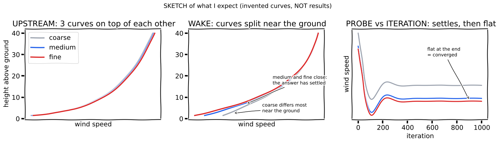
My expectations, location by location:
- upstream Nearly identical on the three meshes (well under 1 %). The mesh there doesn't change, and the nearest building is more than 100 m away (about 180 m straight downwind).
- station and every line at 40 m: small changes. High above the roofs the flow is smooth, so cell size matters less. Changes should get smaller with height.
- gap: moderate changes, mostly low down. The 4 m mesh has only a few cells across the gap; the 1 m mesh has many.
- wake at 2 and 5 m: the largest changes. Behind a building the air slows down, maybe turns back, and changes quickly from place to place. Big cells blur it the most (see the picture in section 2).
- Near the ground in general (2 m): bigger changes too. On the coarse mesh, a probe 2 m above the ground sits inside the very first 4 m cell, where the value comes from a wall formula, not from the computed flow.
- Shrinking differences. The coarse→medium change should be bigger than the medium→fine change (about 2 to 4 times bigger if things behave well). Our method for the wind transport (called "first-order upwind") has a formal order of 1, so a halving of the change per step (p ≈ 1) would be normal. Real flows around buildings are often less regular.
- Convergence plot: all lines flat at the end. The fine mesh may need more iterations to settle. If a wake probe keeps wobbling, it is probably because the real flow there is unsteady (eddies breaking off the building), which a steady solver can't settle.
- Pressure drop: should be positive (higher pressure upstream than in the sheltered wake). For scale, the "dynamic pressure" ½ρU² of a 4 to 5 m/s wind is about 10 to 15 Pa. Like the speeds, it should change less from medium to fine than from coarse to medium.
How to decide, in the morning
| If you see… | It means… | Say… |
|---|---|---|
| Upstream changes by more than about 1 % | Red flag: something other than the mesh changed, or a run is not converged. | Check Table 2 first. Don't claim mesh independence. |
| Probe drift above 0.5 % on some mesh | That run hasn't settled. | "Needs more iterations." Compare with care. |
| medium→fine below 2 % at all probes | Medium is mesh-independent. | "Medium is enough. We can use it (cheaper). Fine only adds detail." |
| medium→fine 2 to 5 % | Acceptable, borderline. | "Medium is acceptable; for drone-scale detail near the station we use fine." |
| Above 5 % in the wake or near the ground, but shrinking | Not yet independent there. | "The wake needs the fine mesh. An extra level in a smaller box would confirm it." |
| "oscillating" in the GCI column | No clear trend at that probe. | Report the spread; probably unsteady flow or the near-wall cell. Steady RANS has limits there. |
8Results (appear in the morning)
Convergence: each probe against iteration

Vertical profiles: wind speed against height, per mesh
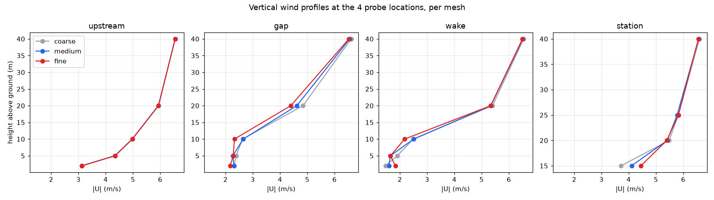
The three tables
Open them in their own page: DLR/results/mesh_study.html (also as Markdown: mesh_study.md). They are shown here too:
One known glitch: the first line of the generated page says the box is "185 × 110 × 48 m". The real box is 185 × 117 × 48 m: it was extended to y = 262 to cover the ±50 m around the station, and that sentence in make_table.py was not updated. The numbers in the tables are not affected.
Pictures of the meshes
These are made separately and show up here once they exist.
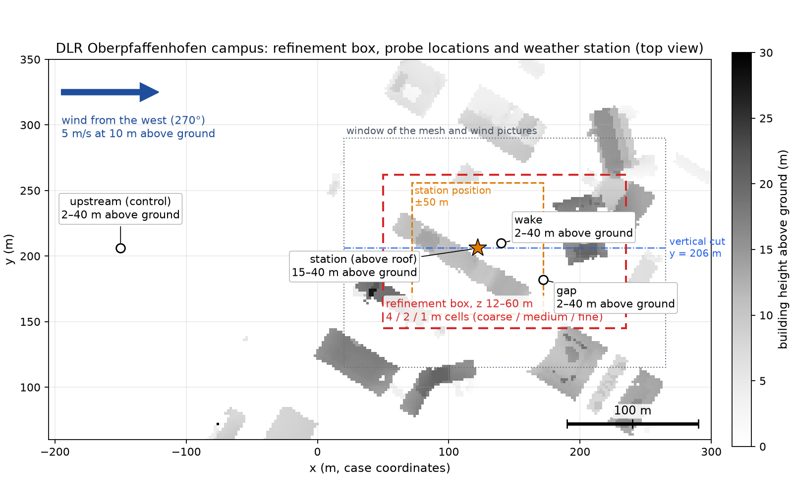
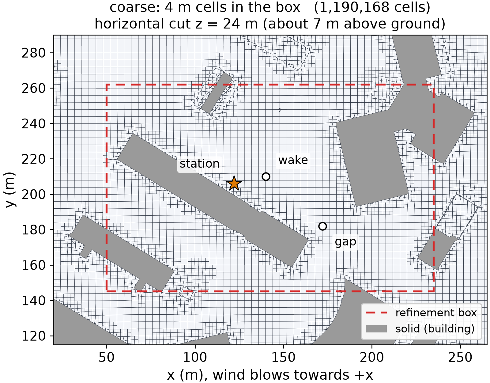
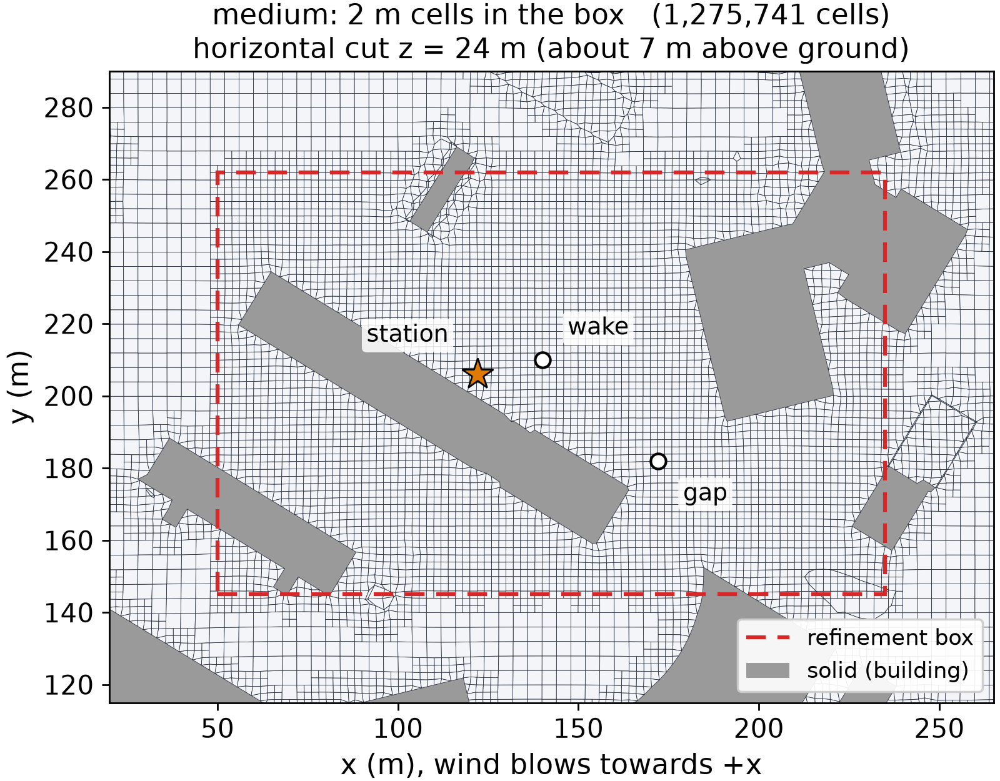
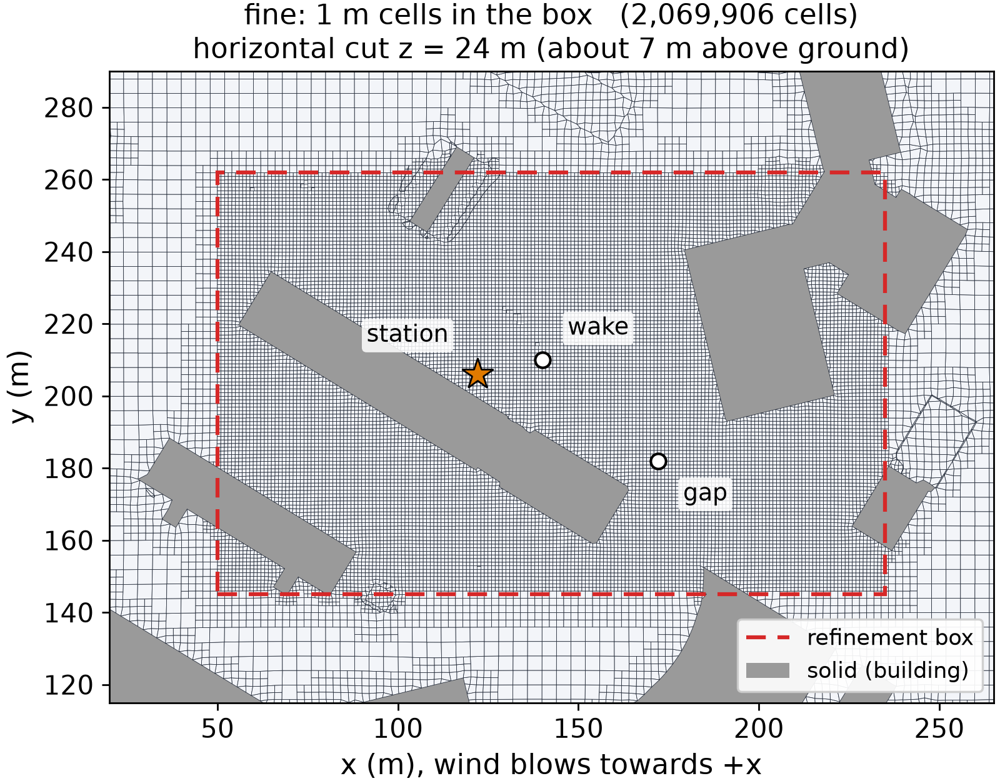
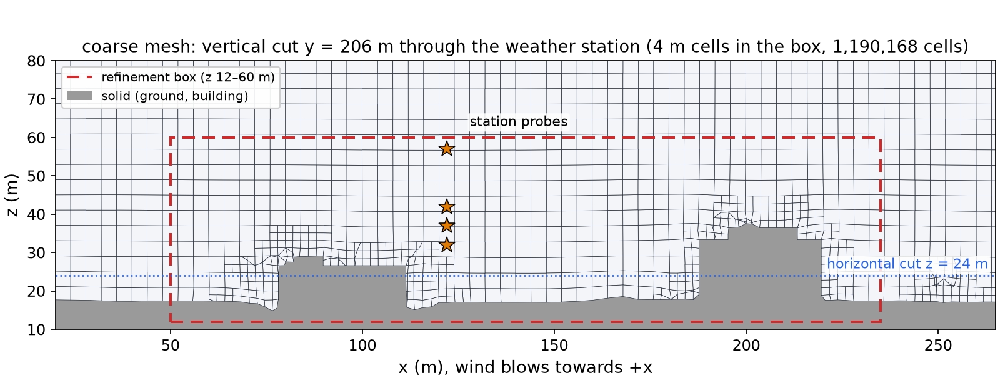
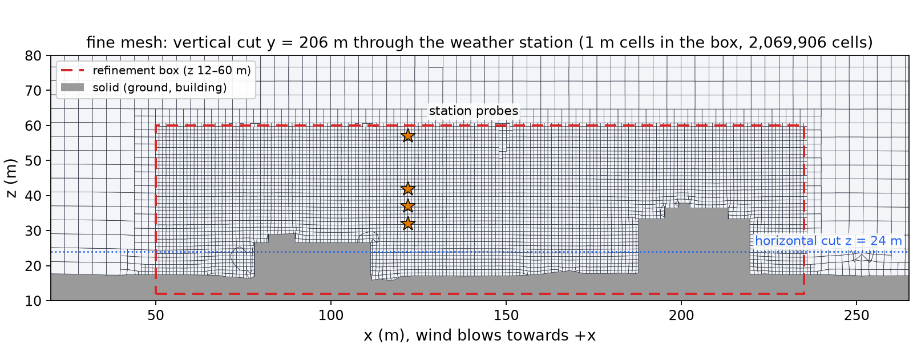
For reference: the wind from the original run
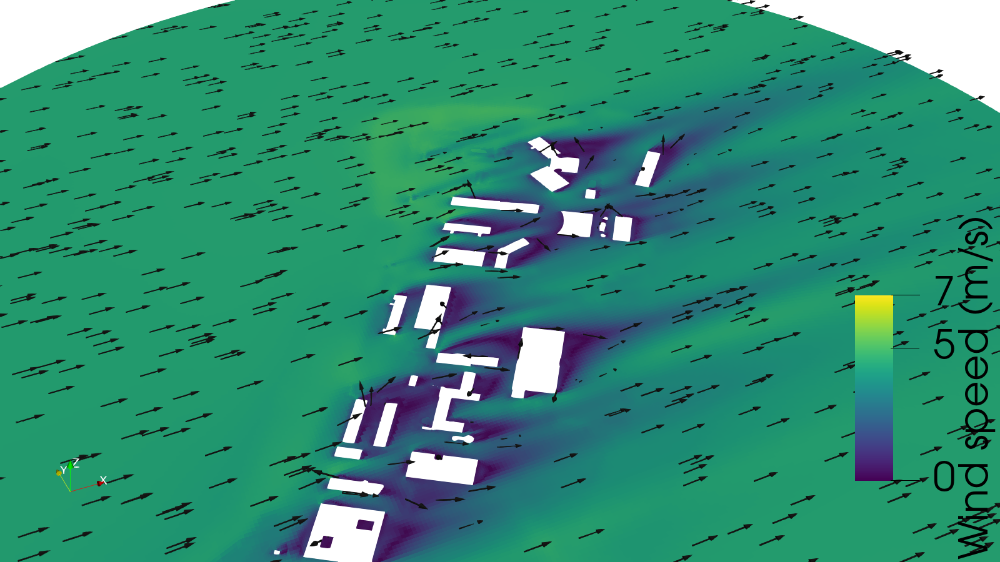
9What to say in the meeting
About one minute. Fill the yellow blanks in the morning.
- Arthur asked for a mesh refinement study at drone scale, so I refined the air around one group of buildings, the DLR weather-station building and its neighbour, down to 1 m cells.
- I ran three meshes that are identical except inside that box, with 4 m, 2 m and 1 m cells, so any change in the result comes from the mesh alone.
- I put the box around the weather station on purpose, and made it cover the station's ±50 m position uncertainty, so the same mesh can later be checked against the real sensor.
- To compare the meshes I placed 19 virtual sensors on four vertical lines, from 2 to 40 m above the ground: upstream as a control, in the gap between buildings, in the wake, and above the station.
- On mesh quality, [all three pass / the coarse mesh has 5 skewed faces out of 3.7 million, all outside the box; medium: __; fine: __].
- All runs converged: residuals dropped to about [__] and no probe moved more than [__] % in the last 100 iterations.
- The key result: from medium to fine, the wind speed changes by at most [__] %, at [which probe], with a GCI of [__] %; upstream it changes by only [__] %. So [the medium mesh is already mesh-independent / the wake needs the fine mesh].
- That's verification. The next steps are validation against the DLR station data, and then adding the turbine.
10Likely questions, short answers
Why only three meshes?
Why halve the cells each time (ratio 2)?
You only refined a box. Is that a real mesh-independence study?
What exactly changed between the meshes?
Why is the box where it is?
Which turbulence model, and what are its limits?
Which numerical schemes? (how the equations are turned into numbers)
What about the wall treatment / y+?
How do you know a run converged?
Why a steady simulation, not a time-dependent one?
Do 1 m cells mean you see 1 m gusts?
What about the skewness failure?
Why a west wind at 5 m/s?
Is the station really there? When can you validate?
How long does it take, on what machine?
How does this become a flight cost map?
And the wind turbine?
11Limits and next steps
Limits (say them before someone else does)
- Local study only. Only the box was refined. The error outside the box is the same in all three runs and is not measured.
- First-order scheme for the wind transport: stable but slightly smeared, and itself mesh-dependent.
- Steady RANS, k-ε: average wind only; known weaknesses in the separated flow around buildings.
- One inflow case: west, 5 m/s at 10 m. A placeholder; the most common wind is south-west at about 3 m/s.
- Invented terrain outside the original terrain strip: flat ground at the median height. Real terrain data (DGM1) would replace it.
- Coarse mesh skewness: 5 faces above the limit (outside the box).
- Sensor: position only ±50 m, mast height unknown, no raw data yet.
- Fixed 1000 iterations: if a probe still drifts on the fine mesh, it needs more.
- Cell counts for medium and fine on this page are my estimates until Table 1 is generated.
- Not done yet: the wind turbine, and the comparison of its wake with published data.
Next steps
- Read Table 3. Choose the mesh: medium if medium→fine is below 2 to 5 % everywhere, otherwise fine.
- Ask DLR (Prof. Rini) for the raw station data, the exact position and the mast height. Then validate.
- Run the south-west wind (the most common one) on the chosen mesh.
- Optional check: rerun the chosen mesh with a second-order scheme to see how much the scheme matters.
- Add the turbine (actuator disk) and compare its wake with published data.
- Export wind speed and k on a regular grid for the flight cost map.
12Glossary
CFD: Computational Fluid Dynamics: computing how air or water flows.
OpenFOAM: Free, open-source CFD software. We use version v2306.
Mesh / grid, cell, face: The air cut into small boxes (cells). A face is a wall between two cells. The solver keeps one value per cell.
Refinement level: How many times a 16 m cube has been halved. Level 2 = 4 m, 3 = 2 m, 4 = 1 m.
Refinement ratio (r): How much smaller the cells get from one mesh to the next. Here r = 2.
blockMesh / snappyHexMesh: OpenFOAM's tools to build the background grid and then refine, cut and snap it to the buildings and ground.
checkMesh: OpenFOAM's tool that checks cell shapes (Table 1).
Skewness: How far the line between two cell centres misses the middle of their shared face (0 = perfect, flagged above 4).
Non-orthogonality: Angle between the centre-to-centre line and the face normal (0° = perfect, warning above 70°).
Aspect ratio: How stretched a cell is: longest side ÷ shortest side, roughly.
Invalid cell: A cell with zero or negative volume, or turned inside out. The solver can't use it.
simpleFoam, SIMPLE: OpenFOAM's solver for steady flow; SIMPLE is its guess-correct-repeat method.
Iteration: One guess-correct round of the solver.
Steady: The wind doesn't change in time; we compute the average flow.
RANS: Reynolds-Averaged Navier–Stokes: equations for the average flow, with a model for turbulence.
k-ε (k-epsilon): The turbulence model. k = energy of the gusts (turbulent kinetic energy), ε = how fast it dies away.
Residual: How far an equation is from being balanced. Falling and flat = converged.
Continuity error: How much air is wrongly created or lost per cell. Should be small.
Converged: More iterations would not change the answer.
Probe: A virtual anemometer: a point where the solver records U, p and k after every iteration.
U, |U|, p: Wind velocity (a vector), wind speed (its size, in m/s), pressure.
Wake: The sheltered, slow, swirling air behind a building.
Recirculation: Air that turns back towards the building, inside the wake.
Pressure drop (Δp): Pressure upstream minus pressure in the wake. Shows how much the buildings brake the wind.
Mesh independence: Smaller cells no longer change the answer (much).
GCI: Grid Convergence Index (Roache): an error band on the fine-mesh value, from three meshes.
Richardson extrapolation: Estimating the answer for infinitely small cells from the trend of three meshes.
Observed order (p): How fast the answer settles when the cells shrink. p = 1: the change halves each step; p = 2: it shrinks 4 times.
Verification / validation: Solving the equations right (the grid is not distorting the answer) / solving the right equations (the model matches reality).
Wall function, roughness length z0: A formula for the air right at a wall instead of computing it; z0 = 0.1 m describes how rough the ground is.
Log law: The usual shape of wind near the ground: slow at the bottom, faster higher up.
Inlet / outlet, boundary conditions: Where the wind enters and leaves the domain, and the rules applied at all the edges.
Upwind scheme (first-order): A simple, stable way to compute how the wind carries things along; slightly smeared.
Case coordinates: The positions used in the simulation: scene coordinates + (335, −279) m. x = east, y = north, z = up (z = 0 is not the ground).